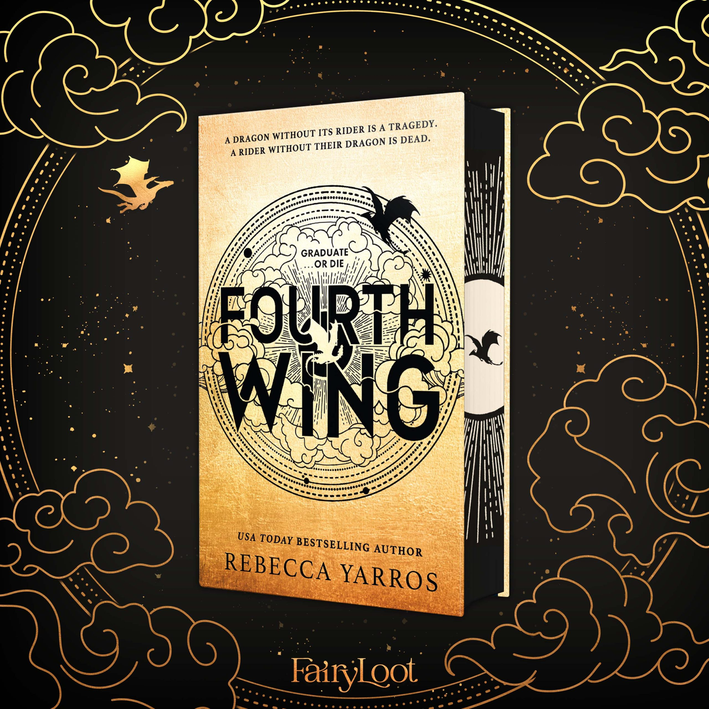

Fourth Wing
€25,50
A dragon without its rider is a tragedy. A rider without their dragon is dead. Welcome, to Fourth Wing.
Fourth Wing is a fantasy novel based in and around the Basgiath War College, the college in which dragon riders are trained, or incinerated.
Expect pages filled with dragons and magical signets which make a page-turning experience of wit, survival and tension.
Rebecca Yarros, New York Times Best Seller. Hardcover edition.
Pros VS Cons
✔ Dragons and magic
✔ Quick paced timeline, doesn't get boring
✔ Romance actually works with the plot
✘ Unfinished series
✘ It made me cry
Summary
Violet Sorrengail joins as cadet for the Riders Quadrant after being trained for the Scribe Quadrant all her life. The Riders Quadrant is ruthless and the weak either get killed by circumstances or classmates or they get incinerated by the dragons they are supposed to fly. Being called weak and breakable because of her chronic disease, it seems that Violet doesn't have a big chance at surviving this violent place.
Xaden Riorson is the son of a rebellious leader. The same leader who got executed at the command of no other than General Sorrengail, Violets mother. Xaden also is one of the most powerful students the College has ever seen. Violets life doesn't get any easier by the lurking threat of getting killed for revenge.
How will she survive in a place where everything and everyone wants her dead? What will she do once she is forced closer to danger and finds herself dangerously attracted to it?
Fourth Wing is the first book of a series that is planned to exist out of 5 books. The next book, Iron Flame, is coming out november 7th 2023.